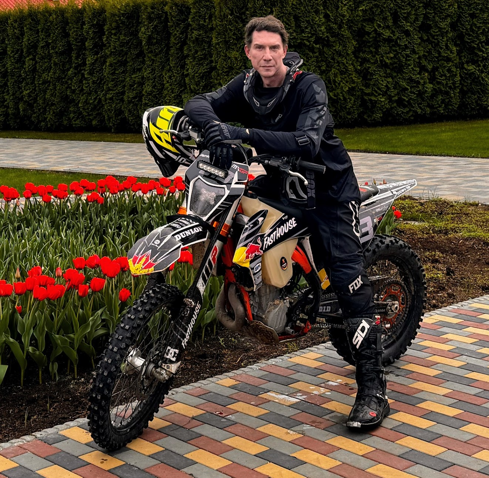

Подход
Объединяю управленческий опыт, системное мышление и технологические решения для создания устойчивых бизнес-моделей и новых продуктов.
Работаю на стыке стратегии, операционного управления и внедрения AI-инструментов в реальные процессы.
Личный сайт
Предприниматель, визионер и создатель стратегических проектов в бизнесе, AI, недвижимости и морских экспедициях.

Биография
Предприниматель с фокусом на стратегическое развитие, технологии и масштабные проекты на стыке бизнеса, инноваций и исследований.
Объединяю управленческий опыт, системное мышление и технологические решения для создания устойчивых бизнес-моделей и новых продуктов.
Работаю на стыке стратегии, операционного управления и внедрения AI-инструментов в реальные процессы.
Коммерческая недвижимость, инвестиционные инициативы, AI-системы для бизнеса и здоровья, морские экспедиции и документальные проекты.
Каждое направление — часть единой стратегии: создавать проекты с долгосрочной ценностью и измеримым результатом.
Направления
Несколько направлений, которые объединяют бизнес, технологии, стратегическое управление и исследовательский подход.
Развитие торговых центров, инвестиционных проектов, коммерческой недвижимости и управленческих систем.
Создание интеллектуальных агентов для бизнеса, здоровья, управления, аналитики и автоматизации процессов.
Морские путешествия, исследования, подводная археология, документальные проекты и экспедиционная логистика.
Связь
Для обсуждения проектов, партнёрств и деловых предложений можно связаться удобным способом или отправить сообщение через форму.